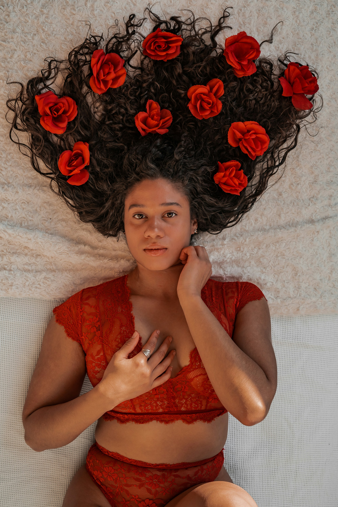

Discover the Allure of Velvet Kitten Lingerie
Velvet Kitten Lingerie is designed to make you feel confident, beautiful, and empowered. Each piece is crafted with luxurious fabrics and delicate details, blending comfort with elegance. Whether you're preparing for a special occasion or simply want to embrace your everyday softness, our collection inspires you to celebrate your unique style and femininity. Experience the perfect balance of sophistication and comfort with every wear.
More...When Do You Feel Like Your Softest Self?
Your softest self emerges in moments of self-care and reflection—when you wrap yourself in cozy fabrics, enjoy a quiet morning, or share laughter with loved ones. Velvet Kitten believes in nurturing these moments, encouraging you to slow down and appreciate the gentle side of life. Let our lingerie be a reminder to honor your softness, embrace your individuality, and find beauty in the everyday.
More...What is Your Favorite Lingerie Style?
Finding the perfect lingerie style is deeply personal and depends on what makes you feel most confident and comfortable in your own skin. Whether you gravitate toward classic elegance with silk and lace sets, prefer the supportive comfort of well-fitted bralettes and high-waisted briefs, or love making a statement with bold colors and intricate details, the best lingerie is whatever makes you feel authentically yourself. The beauty of lingerie lies not just in its aesthetic appeal, but in how it can boost your confidence and help you celebrate your unique style, regardless of whether anyone else sees it.
More...